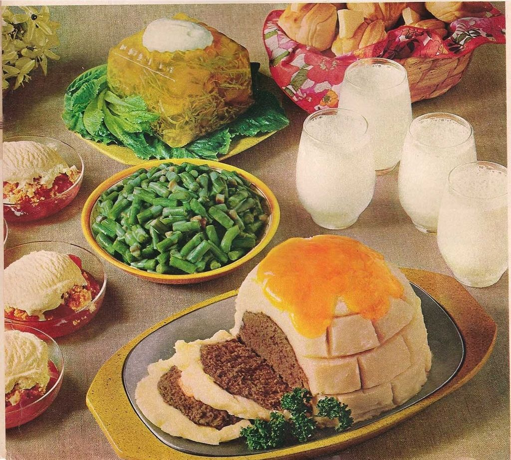

Igloo Meatloaf
Presenting the 'Meatloaf Igloo', a culinary journey to the frozen wastelands of taste.
An architectural marvel where meatloaf went to hibernate and woke up in a state of
existential confusion. It's as if someone dared the laws of flavor to a snowball fight
and lost spectacularly. A dish that proves even comfort food can get lost in translation!"

Ingredients
Igloo Meat Loaf Meat Loaf
- 2 pounds ground beef
- 1/2 cup fine dry bread crumbs
- 6 tablespoons instant minced onion
- 2 teaspoons salt
- 1/8 teaspoon pepper
- 1-1/3 cups evaporated milk
Potato Frosting
- 1-1/2 cups water
- 2/3 cups evaporated milk
- 1/2 teaspoon salt
- 1 tablespoon butter
- 1 envelope (3-1/2 oz.) instant mashed potatoes
- Cheddar cheese slices
How to prepare the Meat Loaf
- In a bowl lightly mix ground beef, crumbs, onion, salt, pepper and evaporated milk just until blended.
- Pack firmly into a 1-1/2-quart bowl;
- turn out of bowl onto a shallow baking pan.
- Bake in a preheated 325 degree oven 1 hour 15 minutes to 1 hour 30 minutes.
How to prepare the Potato Frosting
- In a 1 -1/2-quart saucepan combine water, evaporated milk, salt and butter; bring just to boiling
- Remove from heat; with whip or fork stir in potatoes; whip briskly.
- Frost loaf with potato mixture
- Bake an additional 15 minutes
- Place Cheddar cheese slices on top of Igloo
- return to oven just until cheese starts to melt
Makes 6 to 8 servings
Return to homepage Return to the top About us